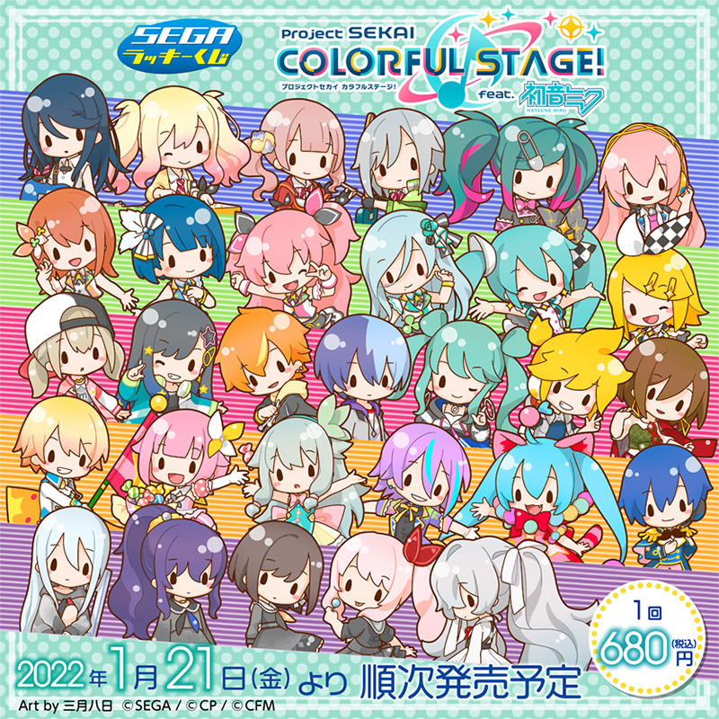
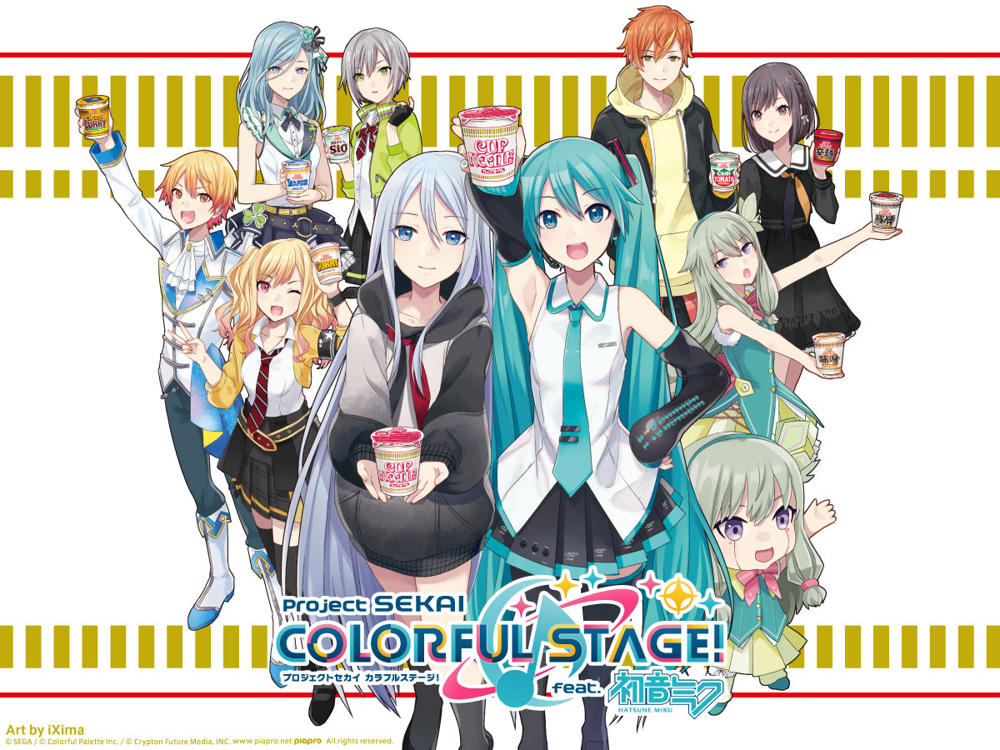

プロジェクトセカイ カラフルステージ！ feat. 初音ミクとは
「プロジェクトセカイ カラフルステージ！ feat. 初音ミク」は、SEGAとCraft Eggが共同開発したリズムゲームです。このゲームはスマートフォン向けに開発されており、バーチャルシンガーの初音ミクを中心に据えています。
プロジェクトセカイは、バーチャル・シンガーの初音ミクをはじめとするクリプトン・フューチャー・メディアが所有するVOCALOIDキャラクターたちをフィーチャーしています。ゲームでは、プレイヤーは様々な楽曲をプレイし、リズムに合わせてタップやフリックなどのアクションを行います。
ゲーム内では、初音ミクや他のバーチャル・シンガーたちが、プレイヤーが操作するキャラクターとして登場します。さまざまな楽曲やキャラクターが楽しめることで、初音ミクやVOCALOIDに関心を持つ人々にとって魅力的なコンテンツとなっています。
とてもクオリティの高い音ゲーとなっていますのでぜひプレイしてみてください。音ゲーが好きな人なら絶対にハマると思います。


情報
2020年
-
2020年9月4日
体験版アプリの配信
-
2020年9月30日
サービス開始
2021年
-
2021年3月6日
プロセカコラボカフェ開催
-
2021年3月30日
0.5周年イベント開催
-
2021年9月30日
1周年イベント開催
2022年
-
2022年1月21日
ラッキーくじ vol.1発売
-
2022年3月30日
1.5周年イベント開催
-
2022年8月5日
ラッキーくじ vol.1再販
-
2022年9月30日
2周年イベント開催